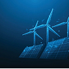

Boas Práticas de Economia de Energia
Diversos domicílios e empresas possuem uma dificuldade significativa sobre a economia de energia. Muitas vezes, as contas acabam aumentando muito dependendo do uso e da demanda de equipamentos. Hoje em dia, possuimos diversas maneiras de economizar neste quesito; com ações importantes que devem ser tomadas afim de manter um ambiente sem grande sufoco sobre os gastos.
O que gasta energia, dependendo da residência e/ou empresas variam muito, especialmente quando equipamentos são utilizados em fábricas e escritórios. Vamos ver algumas práticas que ajudam nesse quesito.
1 - Monitoramento de Energia
Primeiramente é feito o planejamento de tudo, e para isso, precisamos de uma análise de gastos. Vemos quais equipamentos eletrônicos foram mais utilizados no mês, e criamos uma base de cálculo sobre o que foi gasto. É simples, e ajudará a manter um controle maior sobre esse planejamento; podendo assim ver a eficiência e o que precisa ser mudado dentro do local.
2 - Iluminação Eficiente
Trocar lâmpadas incandescentes e outros tipos pelas de LED não só melhoram as contas de luz pela diminuição de gastos, mas também irritam menos a visão, comparadas as lâmpadas ‘azuis’. Sensores de presença em corredores e temporizadores são ótimos para prevenir o desperdício.
3 - Equipamentos Econômicos
Muitas vezes não pensamos no consumo de energia na hora de comprar um equipamento, seja uma geladeira, um chuveiro elétrico ou até um equipamento profissional. Computadores e notebooks também dependem de diferentes tipos de fonte de energia, que tomam mais corrente elétrica que outros — assim, podemos mitigar os gastos pela compra de equipamentos mais eficientes com uma pesquisa anterior, afim de diminuir os gastos de energia.
4 - Capacitação e Treinamento
Um bom incentivo sobre as medidas de consumo é a capacitação de um colaborador na parte empresarial. Muitas vezes, não existe essa conscientização por parte da falta de conhecimento; auxiliar nessas práticas por meio de treinamentos e particiação ativa para o colaborador aprender mais sobre economia de energia é um meio perfeito para deixá-lo mais consciente.
Energias Renováveis
São as partes que mais ajudam na economia de energia. Renováveis contam com principalmente energias eólicas (vento) e solares; enquanto energia eólica possui mais dificuldade de se obter em pequena escala, painéis solares estão disponíveis para o público há anos, podendo trazer uma ampla diferença de consumo de energia comparada à rede elétrica - diminuindo a força em que a rede necessita enviar e subsequentemente, ajudando com a emissão de carbono.